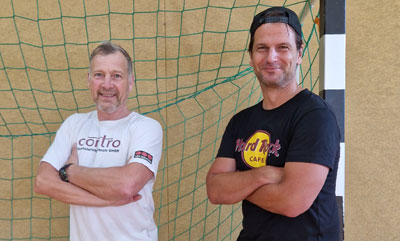
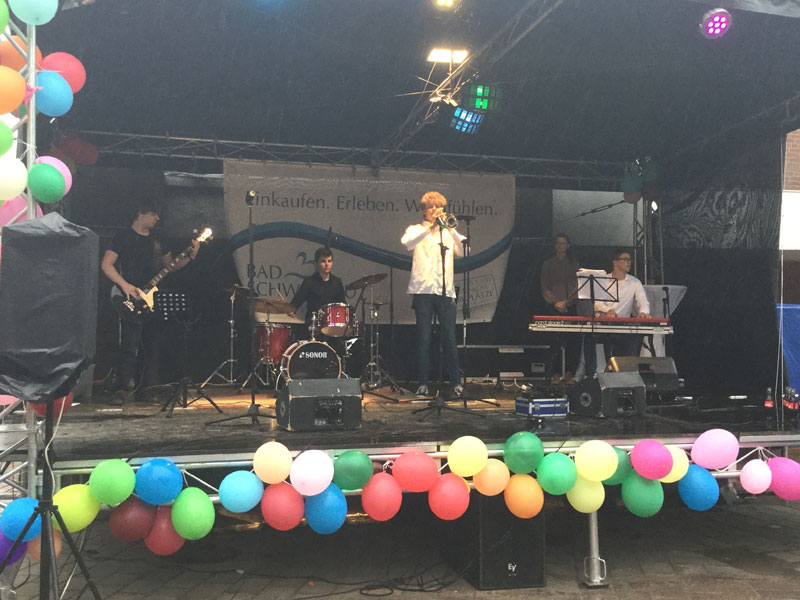
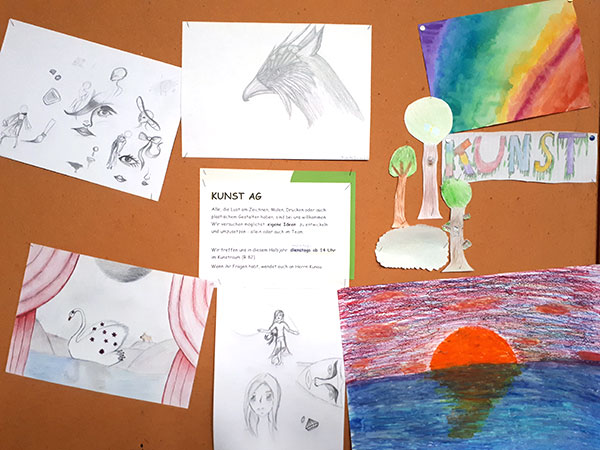
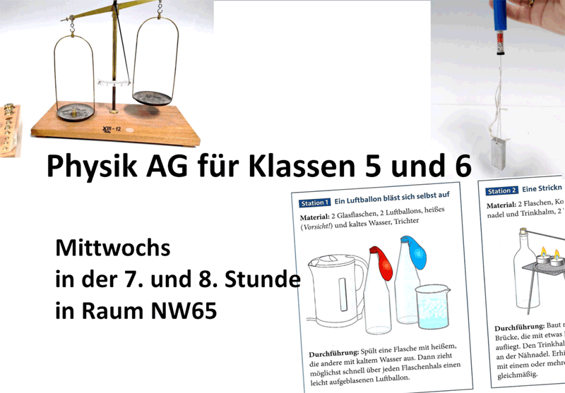
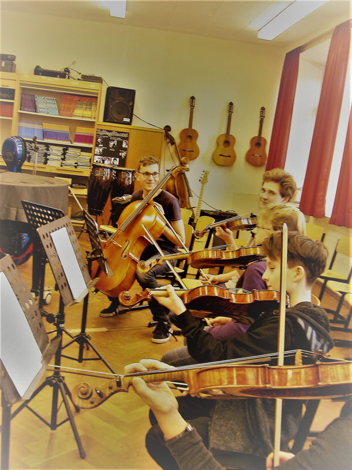
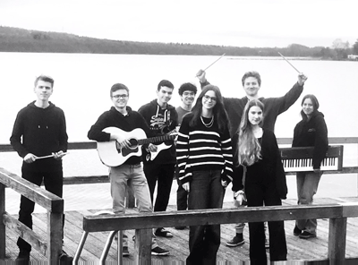

Admins
- Zielgruppe: Schülerinnen und Schüler der Klassenstufen 7 - 12
- Zeit: bei Bedarf
- AG-Leitung: Oliver Brüning (kommissarisch)
Wer Spaß an Technik oder am Programmieren hat oder einfach mal was Neues ausprobieren möchte, ist zur Arduino-AG herzlich eingeladen.
Arduino ist ein Mini-PC, den wir zusammen anhand verschiedener Projekte programmieren wollen.


Ziel der AG ist das Erlangen eines weltweit anerkannten Pearson-Zertifikats für Business-English. Das Zertifikat ist lebenslang gültig, bietet Vorteile für spätere Bewerbungen und wird oftmals von Universitäten anerkannt. Um die Teilnehmer optimal vorzubereiten werden gezielt unterschiedliche prüfungsvorbereitende Übungen durchgeführt. Die AG besteht aus kommunikativen Rollenspiele, Business-Wortschatzübungen und der Betrachtung von Geschäftssitten ausgesuchter Staaten.
Begleitet wird die AG durch ein eigenes Kursbuch und interaktive Übungen.Die Gebühr (ca. 60 €) für das Pearson-Zertifikat wird nur bei tatsächlicher Teilnahme an der Abschlussprüfung erhoben. Bei einer Anwesenheit in mindestens 70% der AG-Stunden wird die Teilnahme mit einem Zertifikat bestätigt.
Unsere Traditions-AG Fußball wird nun endlich wieder zum Leben erweckt.
Hierfür konnten wir mit Gero Maaß einen A-Lizenzinhaber, der jahrelang im Jugendbereich tätig war (u.a. VfB Lübeck A-Jugend), engagieren.
Ziel soll es sein, den Spaß am Fußball zu verstärken, so dass sich jede und jeder auf individuelle Weise in dieser Sportart weiterentwickeln kann.
Du hast Interesse an Handball und an ganz viel Spaß? Dann bist du bei uns genau richtig und wir heißen dich herzlich in der Halle des Leibniz-Gymnasiums willkommen! Wir freuen uns über jede oder jeden, der Lust hat, Handball zu spielen und sich zu bewegen! Der Spaß am Handball steht bei uns an erster Stelle. Ihr braucht also keine Profis zu sein oder euch Sorgen zu machen, falls ihr keine Erfahrungen habt oder Vereinsspieler seid, denn in der AG werden Grundlagen geübt und vorhandene Fertigkeiten weiterentwickelt. Neben kleinen Spielen werden Übungen, Geschicklichkeit, Reaktion, Koordination und Ballbeherschung trainiert. Somit sollen also Fairplay, Spielfreude, Disziplin und Teamgeist gefördet und in den Schulaltag integriert werden. Schaut also gerne einfach mal vorbei!
„Wer einmal mit einem Imker zusammen einen Bienenstock geöffnet hat, von hunderten friedlicher Bienen umschwärmt worden ist und den aromatischen Duft des Bienenstocks eingeatmet hat, steht in der Gefahr, sein Herz an diese wundervollen Geschöpfe zu verlieren.“ Erhard Maria Klein
Seit dem Schuljahr 2015/2016 besteht auch am Leibniz-Gymnasium die Möglichkeit, dieses so faszinierende Handwerk der Imkerei zu erlernen.
Was zunächst im Rahmen des vom Landesverband der Schleswig-Holsteinischen und Hamburger Imker e.V. geförderten Projekts „Sommerbienen“ seinen Anfang nahm, hat sich zwischenzeitlich zu einer eigenständigen Schulimkerei entwickelt.
Dabei steht uns unser Schulimker Herr Redöhl mit Rat und Tat zur Seite und begleitet uns fachkundig durch das Bienenjahr.
Während wir im Frühjahr und Sommer direkt an unseren Bienenvölkern arbeiten und unseren leckeren Leibniz-Honig ernten können, beschäftigen wir uns im Herbst und Winter mit der Verarbeitung der Bienenprodukte. So werden in der Vorweihnachtszeit zum Beispiel Bienenwachskerzen gegossen, die wir anlässlich unseres traditionellen Adventsbasars verkaufen.
Aber es müssen auch die Vorbereitungen für das kommende Jahr getroffen werden. Dazu gehören alle anfallenden Instandhaltungsarbeiten genauso wie das Bauen und Drahten von Rähmchen, das Einlöten von Mittelwänden und vieles mehr.
Das Aneignen theoretischen Fachwissens rund um die Imkerei kommt dabei natürlich nicht zu kurz.
Interessierte Jungimker-/innen sind jederzeit herzlich willkommen!
Die Jazz-AG ist bisher eine Combo bestehend aus Trompete, Klavier, Bass, Schlagzeug und Vibrafon. Die meisten der Musiker befinden sich im Q1-Jahrgang. Über weitere Musiker (z.B. gerne Saxophon) würden wir uns freuen. Unser Repertoire besteht überwiegend aus Jazzstandards. Das sind Jazz-Kompositionen vergangener Jahre und Jahrzehnte, die von Jazzmusikern besonders oft und kontinuierlich gespielt wurden. Besonders ist, dass man im Jazz lernt, eigene Melodien spontan zu entwickeln, d.h. improvisierte Musik zu spielen. Das Bild zeigt unseren Auftritt bei der Einweihung der neuen Schwartauer Markttwiete.
Alle, die Lust am Zeichnen, Malen, Drucken oder auch plastischem Gestalten haben, sind bei uns willkommen. Wir versuchen möglichst eigene Ideen zu entwickeln und umzusetzen - allein oder auch im Team. Dabei entstehen zum Beispiel Landschaften aus Kleisterpapier, Bilder auf Leinwand, großformatige Wandbilder für unser Schulgebäude …
Auch wer ein künstlerisches Studium plant (z.B. Design, Mode, Fotografie, Architektur, Kunsterziehung …), kann bei uns Tipps für seine Bewerbungsmappe bekommen - aber bitte nicht erst einen Tag vor der Abgabe kommen …


Wer Lust hat, sich außerhalb des regulären Unterrichts mit mathematischen Problemen zu beschäftigen, ist bei der Mathe-AG genau richtig. Die Schülerinnen und Schüler der AG arbeiten meist innerhalb ihrer Jahrgänge, an passenden Stellen werden auch jahrgangsübergreifende Gruppen gebildet. Die Teilnehmer der Mathe-AG können sich an der Mathematik-Olympiade und der langen Nacht der Mathematik beteiligen.
Für Schülerinnen und Schüler der 5. und 6. Klassen gibt es wieder die Physik-AG.
Wir einigen uns gemeinsam auf ein Themengebiet, das wir über mehrere Wochen untersuchen.
Im Zentrum stehen dabei vor allem physikalische Experimente. Manchmal verwenden wir dafür mitgebrachte Spielzeuge, manchmal benutzen wir Geräte aus der Physik-Sammlung der Schule. Wir haben uns in der Vergangenheit beispielsweise mit elektrischem Strom beschäftigt. Auch zu mechanischen Bewegungen und Geschwindigkeiten kann man vieles ausprobieren.
 Du hast Interesse am Rudern? Dann bist Du bei der Schüler-Ruder-Riege genau richtig. Seit über 60 Jahren steuern wir die verschiedensten Ziele in unserer Umgebung an: die Trave, runter bis nach Travemünde; die Trave rauf in die Lübecker Innenstadt; die Schwartau, bis zum Kurparksee; die Wakenitz bis nach Ratzeburg.
Du hast Interesse am Rudern? Dann bist Du bei der Schüler-Ruder-Riege genau richtig. Seit über 60 Jahren steuern wir die verschiedensten Ziele in unserer Umgebung an: die Trave, runter bis nach Travemünde; die Trave rauf in die Lübecker Innenstadt; die Schwartau, bis zum Kurparksee; die Wakenitz bis nach Ratzeburg.
Wir bringen euch die richtige Rudertechnik bei, sodass Ausdauer und Kraft richtig trainiert werden. Gleichzeitig lernt ihr viele neue Mitschülerinnen und Mitschüler kennen und stärkt somit den Zusammenhalt in der Gruppe. Mehrmals im Jahr rudern wir auch größere Touren, wie z.B. von Schwerin zurück nach Schwartau oder extern auf dem Wesermarathon oder dem Härtetest.
Ab dem 07.11.2022 bietet die Ruder RG ein Wintertraining in unserer großen Sporthalle an. Bitte beachtet somit unsere neuen unten stehenden Daten.
Wenn ihr aktuelle Beiträge der SRR lesen möchtet, dann klickt bitte hier.
Laut Wikipedia ist ein Salonorchester „ein kleineres Instrumentalensemble, das vor allem für die Aufführung von Unterhaltungsmusik aus der Zeit zwischen etwa 1880 und 1950 zum Einsatz kommt. Bedarf für diese Art Orchester gab es im bürgerlichen Salon und im Ballsaal des 19. Jahrhunderts. Auch nebenbei gehörte Musik musste einst noch live gespielt werden. Das Repertoire dieser Orchester nennt sich Salonmusik.“
Wir nennen uns Salonorchester, weil wir noch ein kleines Ensemble sind. Unser Repertoire endet dafür aber nicht 1950. Wir spielen beispielsweise auch Arrangements aktueller Filmmusik („Fluch der Karibik“) und werden auch Bearbeitungen bekannter klassischer Komponisten aufführen. Bisher sind wir beim Kiwanis SchulMusikFestival und bei den Musik-Abenden unserer Schule aufgetreten. Wir suchen noch Mitspielerinnen und Mitspieler, und wer ein Orchesterinstrument wie Geige, Cello, Querflöte, Klarinette etc. spielt, ist herzlich willkommen.
Das aktuelle AG-Poster ist hier als PDF verfügbar.
Die neue Schulband beschäftigt sich mit aktuellen Musikrichtungen und Klassikern der Pop- und Rockmusik. Es finden regelmäßige Auftritte bei Schulkonzerten statt.
Willkommen sind alle, die ihre Instrumente auf Grundniveau beherrschen und in der Lage sind, verlässlich über die Schulcloud zu kommunizieren.
Weiterhin gerne willkommen sind folgende Instrumente: Gitarre, Trompete, Saxofon, Posaune
Die Schülerinnen und Schüler der Veranstaltungstechnikgruppe betreuen eigenverantwortlich etwa 30 Schulveranstaltungen pro Jahr, bei denen in irgendeiner Form Ton und Licht benötigt wird (z.B. Einschulung, Abi-Verabschiedung, Informationsveranstaltungen, Theater, Musical, Unterstufen- und Mittelstufenparty, Sponsorenlauf, Bundesjugendspiele, Weihnachtsbasar, Musikabende, Gastauftritte etc.). Anlassbezogen finden Schulungen zu einzelnen Themen aus dem Bereich der Veranstaltungstechnik statt (bspw. Sicherheit, digitale Lichtsteuerung, Audio-Signalverarbeitung, Mikrophonierung, Durchführungsplanung, etc.). Die Veranstaltungstechnik-Gruppe richtet sich vorwiegend an Schülerinnen und Schüler mit besonderer technischer Begabung und einem hohem Maß an Verantwortungsbewusstein.